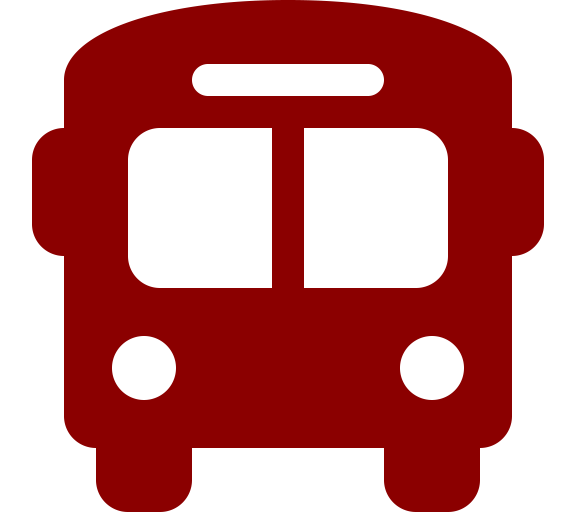

Directions & Parking


- Tompkins Consolidated Area Transit (TCAT) offers public bus transportation from all over the county. One-way fares are $1.50 per adult.
- Cornell University students can ride without a fare on weekends and after 6pm with their student ID card.
- Residents and visitors can park in the Seneca, and Cayuga Street garages and walk to anywhere in Downtown Ithaca. Please note the Green Garage is closed for construction.
- Garage parking is $1.00 per hour in the garages. On-street parking is $1.50 per hour during the week until 6pm.